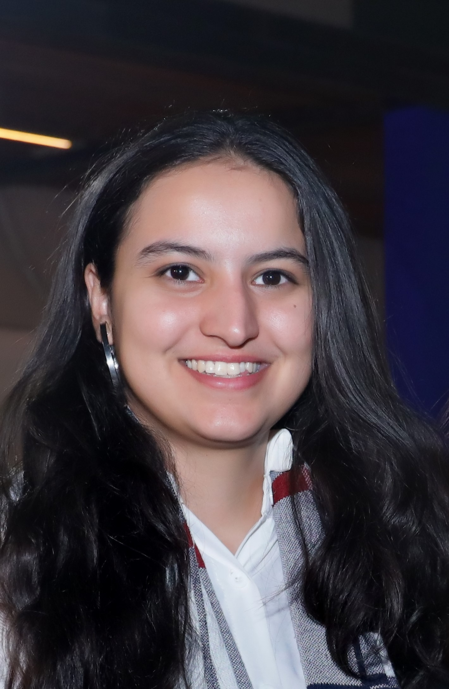

|  |
SummaryResourceful and solution-focused software engineer with 2+ years of experience in Oracle APEX, SQL/PLSQL,and database engineering. Known for delivering robust technical solutions, collaborating effectively with cross-functional teams, and stepping into mentorship roles early in my career. As a co-founder of a startup, I gained valuable experience in agile development and fast-paced problem-solving. I am now seeking a developer role where I can continue to grow, contribute meaningfully, and be part of a team that values innovation, dedication, and real impact. |
| Year | Organization | Job Description |
|---|---|---|
| Jan 2023-present | Andritz HYDRO Pvt Ltd | Oracle APEX Developer |
Oracle APEX Certified Developer
August 2024
Buzz.AI - Technical Solutions Start-up
Jan 2020 - March 2022
Designed an ecosystemthat automatically detects vehicle crashand alerts stakeholder’s
family, nearest medical facility and law enforcements. Key features also included AIbased
real-time driving behavior analysis.
Key Skills - Management, organization, documentation, marketing, research, analysis,
presentation skills, pitching skills, HR operations, communications.
Linux and Foss Workshop
Organized a 3-day workshop for college students.